# 操作系统
# 软件依赖
- HDP
- scala
- flink
# 实验环境
- CentOS 7
- HDP 3.1
- scala 2.11
- flink 2.11
# 什么是 Flink
Apache Flink 是一个框架和分布式处理引擎，用于在无边界和有边界数据流上进行有状态的计算。Flink 能在所有常见集群环境中运行，并能以内存速度和任意规模进行计算。
# Flink 特点
- Apache Flink 是一个分布式系统的思想是万物皆是数据流，批处理只是流处理的特例。Flink 把数据分为两种类型：无界和有界数据
- 无界流 有定义流的开始，但没有定义流的结束。它们会无休止地产生数据。无界流的数据必须持续处理，即数据被摄取后需要立刻处理。我们不能等到所有数据都到达再处理，因为输入是无限的，在任何时候输入都不会完成。处理无界数据通常要求以特定顺序摄取事件，例如事件发生的顺序，以便能够推断结果的完整性。
- 有界流 有定义流的开始，也有定义流的结束。有界流可以在摄取所有数据后再进行计算。有界流所有数据可以被排序，所以并不需要有序摄取。有界流处理通常被称为批处理
- Apache Flink 是一个分布式系统，Flink 集成了所有常见的集群资源管理器，例如 Hadoop YARN、 Apache Mesos 和 Kubernetes，但同时也可以作为独立集群运行，Flink 支持 local 模式、集群模式（standalone 集群或者 Yarn 集群）、云端部署。
- 在集群上的 Flink，应用程序被并行化为可能数千个任务发布到每一台服务器上进行处理，而且 Flink 能很容易的维护应用程序的状态
- Flink 基于内存进行计算，任务状态也保存在内存中，速度会非常而已能控制每条记录的状态。
# Flink vs Spark
- Spark：
Spark 的数据模型是弹性分布式数据集 RDD，这个内存数据结构使得 spark 可以通过固定内存做大批量计算。初期的 Spark Streaming 是通过将数据流转成批 (micro-batches)，即收集一段时间 (time-window) 内到达的所有数据，并在其上进行常规批处，所以严格意义上，还不能算作流式处理。但是 Spark 从 2.x 版本开始推出基于 Continuous Processing Mode 的 Structured Streaming，支持按事件时间处理和端到端的一致性，但是在功能上还有一些缺陷，比如对端到端的 exactly-once 语义的支持
Spark DAG 示意图
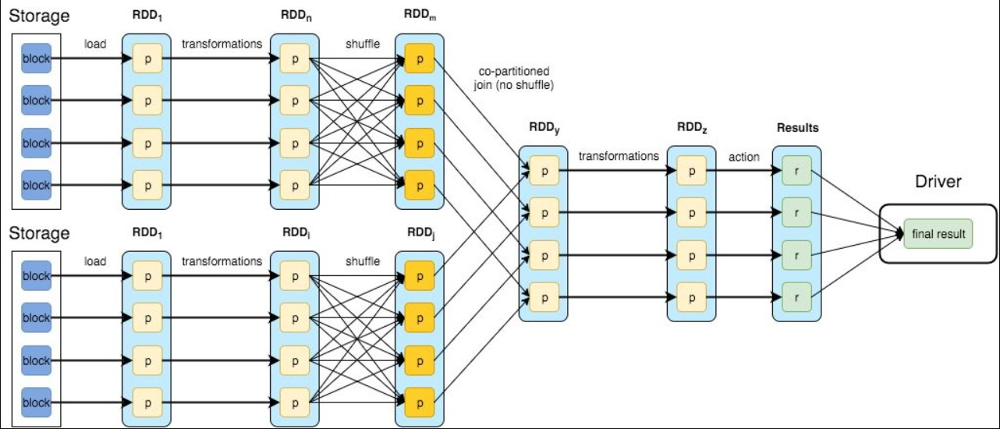 - Flink：
Flink 是统一的流和批处理框架，基本数据模型是数据流，以及事件 (Event) 的序列，Flink 从设计之初秉持了一个观点：批是流的特例。每一条数据都可以触发计算逻辑，那么 Flink 的流特性已经在延迟方面占得天然优势。
Flink workflow 示意图
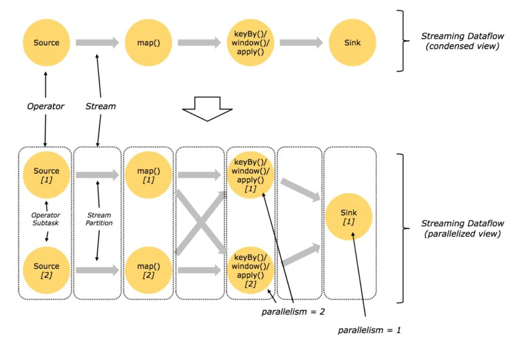
# 应用对比
| API | Spark | Flink |
|---|---|---|
| 底层 api | RDD | Process Function |
| 核心 api | DataStream/DataSet/Structured Stream | DataStream/DataSet |
| SQL | Spark SQL | Table Api&SQL |
| 机器学习 | MLlib | FlinkML |
| 图计算 | Graph | Gelly |
| 其他 | CEP | |
# 开发语言
| 支持语言 | Spark | Flink |
|---|---|---|
| java | √ | √ |
| scala | √ | √ |
| python | √ | √ |
| R | √ | ×（需要第三方） |
| SQL | √ | √ |
# Flink 部署
下载
官网下载地址：http://flink.apache.org/downloads.html。
这里选择 flink-1.10.0-bin-scala_2.11.tgz解压
tar -zxvf flink-1.10.0-bin-scala_2.11.tgz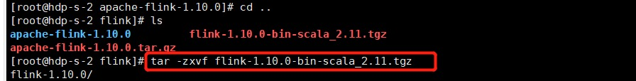
启动 Flink
进入bin目录：cd /usr/flink/flink-1.10.0/bin
启动flink：./start-cluster.sh
启动成功如下：jps 可以看到 StandaloneSessionClusterEntrypoint 在运行说明成功！
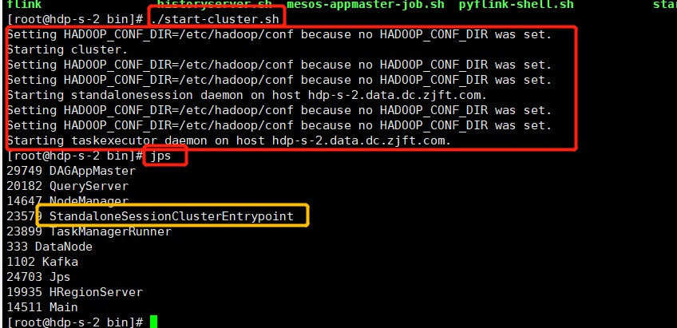开放端口 8081
vi /etc/sysconfig/iptables-A INPUT -m state --state NEW -m tcp -p tcp --dport 8081 -j ACCEPT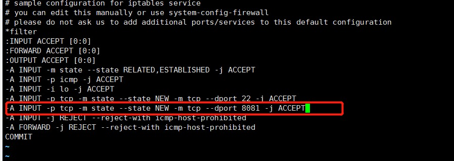
访问 ui 界面
输入 10.34.11.142：8081
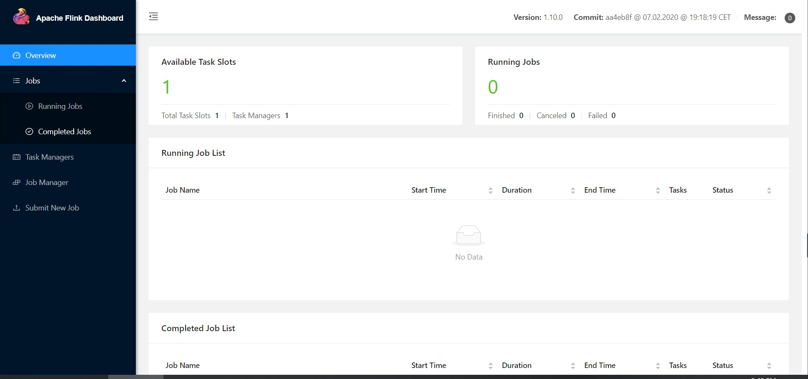测试
打开 3 个会话- 第一个，启动监听客户端端口
输入： nc -lk 8888
## 注意：端口可以自己定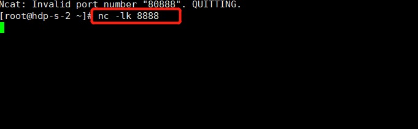
- 第二个，启动 flink 的自带 demo
## 切换到 flink 安装目录下cd /usr/flink/flink-1.10.0/## 启动程序，注意：端口号跟第一个端口一致bin/flink run examples/streaming/SocketWindowWordCount.jar --port 8888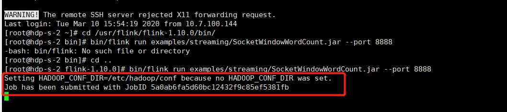
- 第三个，启动日志监控
#其中.out 文件会根据服务器名称自己变化tail -f flink-root-taskexecutor-0-hdp-s-2.data.dc.zjft.com.out在第一个会话输入
zijin
aa
日志可以监控到
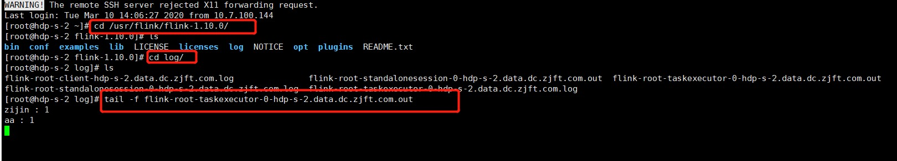
ui 界面信息
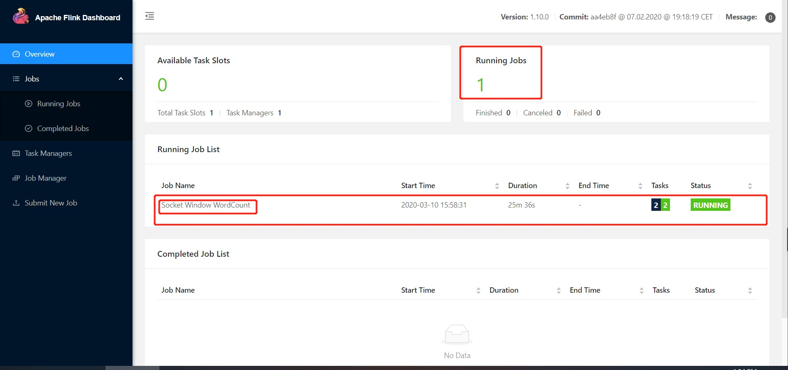
# Flink 集群
# 集群安装部署
资源规划
Host Name ip role hdp-m-1 10.34.11.70 master hdp-s-1 10.34.11.142 slave hdp-s-2 10.34.11.154 slave 配置 flink-conf.yaml 文件
在所有机器上配置# 配置主节点（即配置 master 节点）jobmanager.rpc.address: hdp-m-1.data.dc.zjft.com
#jobmanager 内存大小jobmanager.heap.size: 4096m
#taskmanager 内存大小taskmanager.memory.process.size: 4096m
#配置 task 任务槽数taskmanager.numberOfTaskSlots: 4
#设置并行数，就是是集群总核数parallelism.default: 16
#web ui 端口rest.port: 8899
配置 masters
在所有机器上配置
#有多个 master 可以加多个，记得端口带上，和 flink-conf.yaml 配置的要一样，删掉本来 masters 配置文件中的 localhost:8081hdp-m-1.data.dc.zjft.com:8899
配置 slaves
在所有机器上配置
#将子节点的 ip 或者域名加上hdp-s-1.data.dc.zjft.com
hdp-s-2.data.dc.zjft.com
开放 8899 端口
只配置 master 节点
vi /etc/stsconfig/iptables#加入下面这句-A INPUT -m state --state NEW -m tcp -p tcp --dport 8899 -j ACCEPT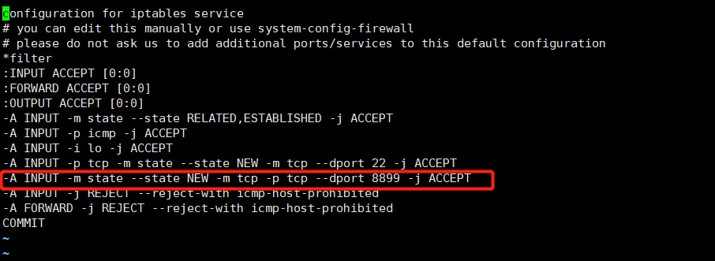
启动测试
只需要启动 master 服务
cd /usr/flink/flink-1.10.0/bin./start-cluster.sh
可以有三个 manager
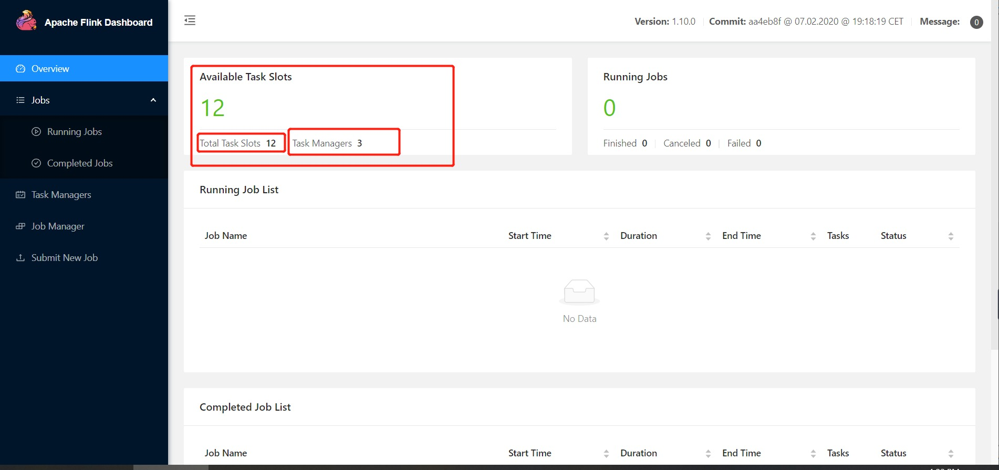
# 配置集群高可用
HDP 的 zookeeper 集群代管理 Flink 服务。
进入 flink 配置目录
cd /usr/flink/flink-1.10.0/conf修改 flink-conf.yaml
vi flink-conf.yaml添加下列配置
high-availability: zookeeper
high-availability.zookeeper.path.root: /flink
high-availability.cluster-id: /cluster_one
high-availability.storageDir: file:///flink/recovery
high-availability.zookeeper.quorum: 10.34.11.124:2181,10.34.11.70:2181,10.34.11.133:2181
修改 masters
vi masters添加下列配置
10.34.11.70:8899 10.34.11.154:8899修改 zoo.cfg
vi zoo.cfg添加下列配置
server.1=hdp-e-1.data.dc.zjft.com:2888:3888 server.2=hdp-m-1.data.dc.zjft.com:2888:3888 server.3=hdp-m-2.data.dc.zjft.com:2888:3888 将配置分发到各个节点 scp flink-conf.yaml,masters,zoo.cfg root@10.34.11.142:/usr/flink/flink- 1.10.0/conf scp flink-conf.yaml,masters,zoo.cfg root@10.34.11.154:/usr/flink/flink- 1.10.0/conf重启 flink
启动 flink 之前要确保 zookeeper 启动正常，再启动flink
cd /usr/flink/flink-1.10.0/confstart-cluster.sh
可以看到，启动了两个 standalonesession 进程，也就是两个 jobmanager 进程
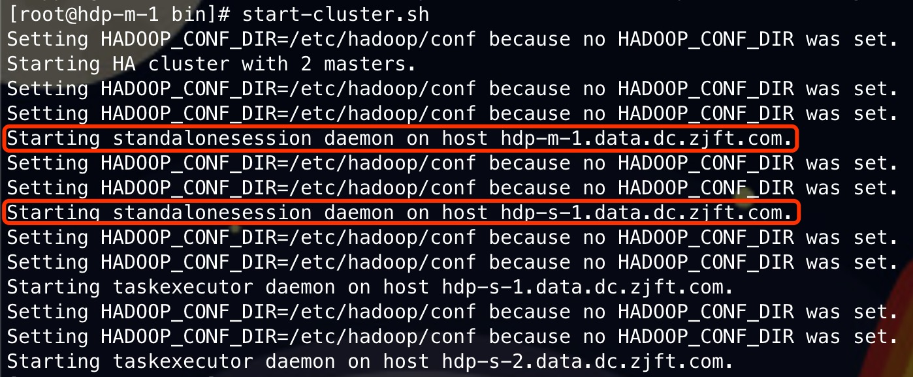测试高可用
- 查看 leader
#在 zookeeper 中查看哪个进程是 leadercd /usr/hdp/3.1.0.0-78/zookeeper/bin./zkCli.sh
get /flink/cluster_one/leader/rest_server_lock
可以看见 10.34.11.70:8899 为 leader
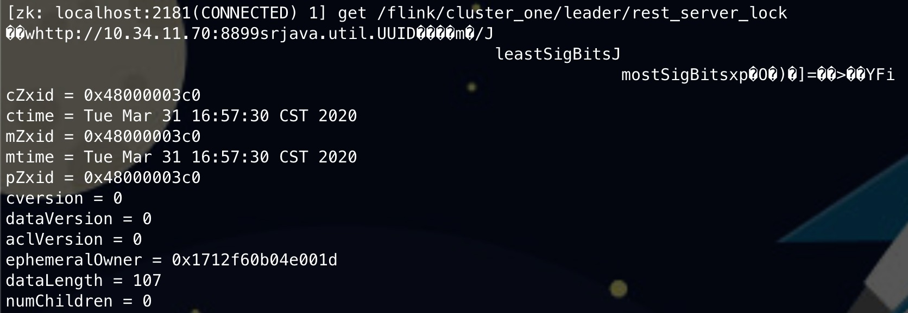- 手动杀手 leader 节点
查找 leader 节点的端口
jps
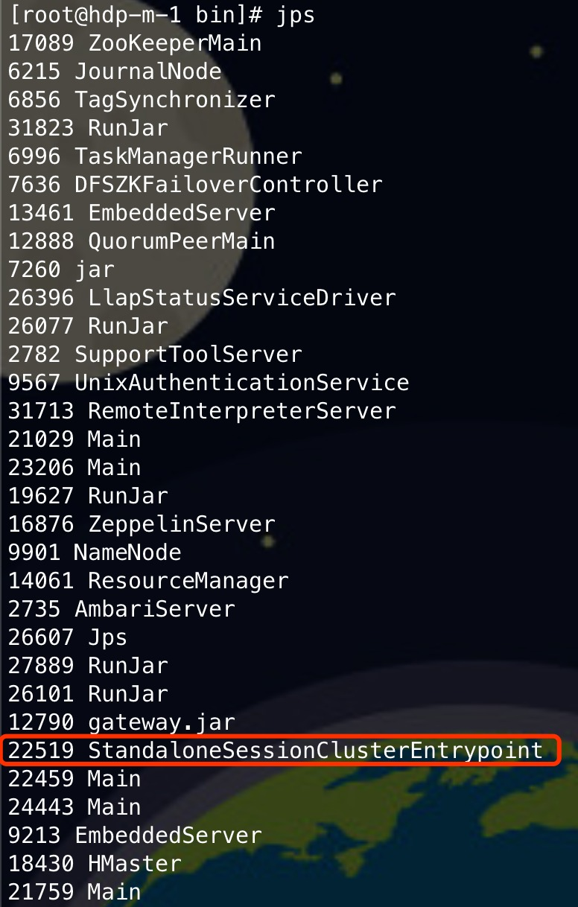
杀死进程kill -9 22519
# 执行成功之后需要等待一会，因为切换需要时间，然后在 zookeeper 客户端中查看 leader 节点信息get /flink/cluster_one/leader/rest_server_lock
leader 节点从 70 切换到了 154
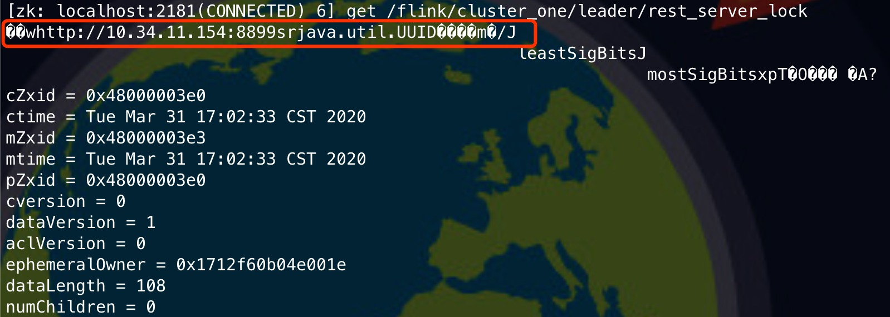- 查看 leader
# Flink 基础使用
# 开发
Flink 代码由三部分组成
- source：source 作为整个 stream 中的入口
- computer：数据处理逻辑
- sink：sink 作为整个 stream 的终点。
- maven 依赖
<properties><scala.version>2.11.8</scala.version>
<scala.binary.version>2.11</scala.binary.version>
<flink.version>1.10.0</flink.version>
<hbase.version>2.0.2</hbase.version>
</properties><dependencies><!--flink--><dependency><groupId>org.apache.kafka</groupId>
<artifactId>kafka-clients</artifactId>
<version>2.0.0</version>
</dependency><dependency><groupId>org.apache.flink</groupId>
<artifactId>flink-streaming-scala_2.11</artifactId>
<version>${flink.version}</version>
<scope>compile</scope>
</dependency><dependency><groupId>org.apache.flink</groupId>
<artifactId>flink-connector-kafka_2.11</artifactId>
<version>${flink.version}</version>
</dependency><dependency><groupId>org.apache.flink</groupId>
<artifactId>flink-clients_2.11</artifactId>
<version>${flink.version}</version>
</dependency><!-- <dependency><groupId>org.apache.flink</groupId>
<artifactId>flink-sql-client_2.11</artifactId>
<version>${flink.version}</version></dependency>-->
<!--hbase--><dependency><groupId>org.apache.hbase</groupId>
<artifactId>hbase-client</artifactId>
<version>${hbase.version}</version>
</dependency><dependency><groupId>org.apache.hbase</groupId>
<artifactId>hbase-server</artifactId>
<version>${hbase.version}</version>
</dependency><dependency><groupId>org.apache.hbase</groupId>
<artifactId>hbase-mapreduce</artifactId>
<version>${hbase.version}</version>
</dependency><dependency><groupId>postgresql</groupId>
<artifactId>postgresql</artifactId>
<version>9.1-901-1.jdbc4</version>
</dependency><dependency><groupId>org.scala-lang</groupId>
<artifactId>scala-library</artifactId>
<version>${scala.version}</version>
</dependency></dependencies> - source 模块和 computer 模块
以 kafka 为数据源，因为不用逻辑处理，所以直接传入，其中 source 和 sink 的数据可以自定义处理package com.zjft.flink
import java.util.Properties
import com.zjft.common.utils.KafkaOffset
import com.zjft.flink.sink.postgreSQL.PostgreSQLSink
import org.apache.flink.api.common.serialization.SimpleStringSchema
import org.apache.flink.streaming.api.scala._
import org.apache.flink.streaming.connectors.kafka.FlinkKafkaConsumer
import org.apache.flink.streaming.connectors.kafka.internals.KafkaTopicPartition
import org.apache.kafka.clients.consumer.ConsumerConfig
import org.apache.kafka.common.serialization.StringDeserializer
object FlinkApp {
def FlinkApp = {
// 启动 flink 环境val env: StreamExecutionEnvironment = StreamExecutionEnvironment.getExecutionEnvironment
val properties: Properties = new Properties()
//val JDBC_HOST = "10.34.11.141"//val JDBC_PORT = "2345"// val JDBC_DATABASES = "postgres"//val JDBC_USER = "gpadmin"//val JDBC_PASSWORD ="cloud.Zijin"//val JDBC_TABLE ="public.flinkdata"val topic = "ha-demo-1"
val hostAddress="10.34.11.142:6667"
var clientId = "1213"
//var commitInterval = 10import org.apache.flink.api.scala._
env.setParallelism(8)
env.enableCheckpointing(500)
// 指定 kafka 的启动集群properties.setProperty(ConsumerConfig.BOOTSTRAP_SERVERS_CONFIG, hostAddress)
// 指定消费者组properties.setProperty(ConsumerConfig.GROUP_ID_CONFIG, "OffsetControl")
// 指定 key 的反序列化类型// properties.setProperty(ConsumerConfig.KEY_DESERIALIZER_CLASS_CONFIG, classOf[StringDeserializer].getName)// 指定 value 的反序列化类型// properties.setProperty(ConsumerConfig.VALUE_DESERIALIZER_CLASS_CONFIG, classOf[StringDeserializer].getName)// 指定自动消费的策略// 到 hbase 中的 offset 表拿到 offset，并 put 到一个 HashMap [KafkaTopicPartition,java.lang.Long] 的 map 中var offset = KafkaOffset.Create(clientId,commitInterval).getLatestOffset(clientId, topic).toLong
var offsets =new java.util.HashMap[KafkaTopicPartition,java.lang.Long]
offsets.put(new KafkaTopicPartition(topic, 0), offset)
// 创建 kafka 消费者var consumer = new FlinkKafkaConsumer[String](topic,
new SimpleStringSchema(),
properties).setStartFromSpecificOffsets(offsets)
// 加入数据源val kafkaData:DataStream[String] = env.addSource(consumer)
kafkaData.print()
val sink = new PostgreSQLSink2(offset,topic,"0")
// 将结果 sink 入到 pg 中kafkaData.addSink( sink)
env.execute("kafkasource")
}}```
- sink 模块
sink 中主要 3 个方法的重写
open
invoke
close
package com.zjft.flink.sink.postgreSQL
import com.zjft.common.beans.Message
import org.apache.flink.configuration.Configuration
import org.apache.flink.streaming.api.functions.sink.RichSinkFunction
import java.sql.{Connection, DriverManager, PreparedStatement}
import com.zjft.common.utils.KafkaOffset
class PostgreSQLSink2(offset1:Long, topic1:String, partition1: String) extends RichSinkFunction[String] {
var m:Message = _
// JDBC 连接信息val JDBC_URL = "jdbc:postgresql://10.34.11.141:2345/postgres"
val JDBC_USER = "gpadmin"
val JDBC_PASSWORD ="cloud.Zijin"
var conn:Connection=_
val JDBC_DRIVER_CLASS="org.postgresql.Driver"
private val serialVersionUID = 1L
private var connection:Connection = _
private var preparedStatement:PreparedStatement = _
var offset:Long=offset1
var offset_before:Long=offset1
var topic:String=topic1
var partition:String="0"
//classOf[org.postgresql.Driver]/*** open 方法是初始化方法，会在 invoke 方法之前执行，执行一次。
*/
def postgreSQLSink(offset1:Long,topic1:String,partition1: String){
offset = offset1offset_before = offset1topic = topic1partition = partition1}override def open(parameters:Configuration) {
// 加载 JDBC 驱动Class.forName(JDBC_DRIVER_CLASS)
// 获取数据库连接connection = DriverManager.getConnection(JDBC_URL,JDBC_USER,JDBC_PASSWORD)
val sql:String =s"""insert into public.flinkdata values(?,?,?,?,?,?,?,?,?,?,?,?,?,?,?,?,?,?,?,?,?,?,?,?,?,?,?,?,?,?,?,?,?,?,?,?,?,?,?,?,?,?,?,?,?,?,?,?,?,?,?,?,?,?,?,?,?,?,?,?,?,?,?,?,?,?,?,?,?,?,?,?,?,?,?,?,?,?,?,?,?,?,?,?,?,?,?,?,?,?,?,?,?)"""
preparedStatement = connection.prepareStatement(sql)
println("entry open")
// println(preparedStatement)super.open(parameters)
}/*** invoke () 方法解析一个元组数据，并插入到数据库中。
*
* @param data 输入的数据
* @throws Exception
*/
@throws[Exception]
override def invoke(data:String): Unit = {
var data1=data.toString.split(";")
println("entry invoke")
try {
preparedStatement.setString(1,data1(0))
preparedStatement.setString(2,data1(1))
preparedStatement.setString(3,data1(2))
preparedStatement.setString(4,data1(3))
preparedStatement.setString(5,data1(4))
preparedStatement.setString(6,data1(5))
preparedStatement.setString(7,data1(6))
preparedStatement.setString(8,data1(7))
preparedStatement.setString(9,data1(8))
preparedStatement.setString(10,data1(9))
preparedStatement.setString(11,data1(10))
preparedStatement.setString(12,data1(11))
preparedStatement.setString(13,data1(12))
preparedStatement.setString(14,data1(13))
preparedStatement.setString(15,data1(14))
preparedStatement.setString(16,data1(15))
preparedStatement.setString(17,data1(16))
preparedStatement.setString(18,data1(17))
preparedStatement.setString(19,data1(18))
preparedStatement.setString(20,data1(19))
preparedStatement.setString(21,data1(20))
preparedStatement.setString(22,data1(21))
preparedStatement.setString(23,data1(22))
preparedStatement.setString(24,data1(23))
preparedStatement.setString(25,data1(24))
preparedStatement.setString(26,data1(25))
preparedStatement.setString(27,data1(26))
preparedStatement.setString(28,data1(27))
preparedStatement.setString(29,data1(28))
preparedStatement.setString(30,data1(29))
preparedStatement.setString(31,data1(30))
preparedStatement.setString(32,data1(31))
preparedStatement.setString(33,data1(32))
preparedStatement.setString(34,data1(33))
preparedStatement.setString(35,data1(34))
preparedStatement.setString(36,data1(35))
preparedStatement.setString(37,data1(36))
preparedStatement.setString(38,data1(37))
preparedStatement.setString(39,data1(38))
preparedStatement.setString(40,data1(39))
preparedStatement.setString(41,data1(40))
preparedStatement.setString(42,data1(41))
preparedStatement.setString(43,data1(42))
preparedStatement.setString(44,data1(43))
preparedStatement.setString(45,data1(44))
preparedStatement.setString(46,data1(45))
preparedStatement.setString(47,data1(46))
preparedStatement.setString(48,data1(47))
preparedStatement.setString(49,data1(48))
preparedStatement.setString(50,data1(49))
preparedStatement.setString(51,data1(50))
preparedStatement.setString(52,data1(51))
preparedStatement.setString(53,data1(52))
preparedStatement.setString(54,data1(53))
preparedStatement.setString(55,data1(54))
preparedStatement.setString(56,data1(55))
preparedStatement.setString(57,data1(56))
preparedStatement.setString(58,data1(57))
preparedStatement.setString(59,data1(58))
preparedStatement.setString(60,data1(59))
preparedStatement.setString(61,data1(60))
preparedStatement.setString(62,data1(61))
preparedStatement.setString(63,data1(62))
preparedStatement.setString(64,data1(63))
preparedStatement.setString(65,data1(64))
preparedStatement.setString(66,data1(65))
preparedStatement.setString(67,data1(66))
preparedStatement.setString(68,data1(67))
preparedStatement.setString(69,data1(68))
preparedStatement.setString(70,data1(69))
preparedStatement.setString(71,data1(70))
preparedStatement.setString(72,data1(71))
preparedStatement.setString(73,data1(72))
preparedStatement.setString(74,data1(73))
preparedStatement.setString(75,data1(74))
preparedStatement.setString(76,data1(75))
preparedStatement.setString(77,data1(76))
preparedStatement.setString(78,data1(77))
preparedStatement.setString(79,data1(78))
preparedStatement.setString(80,data1(79))
preparedStatement.setString(81,data1(80))
preparedStatement.setString(82,data1(81))
preparedStatement.setString(83,data1(82))
preparedStatement.setString(84,data1(83))
preparedStatement.setString(85,data1(84))
preparedStatement.setString(86,data1(85))
preparedStatement.setString(87,data1(86))
preparedStatement.setString(88,data1(87))
preparedStatement.setString(89,data1(88))
preparedStatement.setString(90,data1(89))
preparedStatement.setString(91,data1(90))
preparedStatement.setString(92,data1(91))
preparedStatement.setString(93,offset.toString())
offset = offset+1
preparedStatement.executeUpdate()
if (offset-offset_before==commitInterval){
// KafkaOffset.getCurrent().commit(offset.toInt,topic)offset_before=offset}} catch {
case e: Exception =>
e.printStackTrace()
}}/*** close () 是 tear down 的方法，在销毁时执行，关闭连接。
*/
// @Overrideeoverride def close() {
if(preparedStatement != null){
preparedStatement.close()
println("entry preparedStatement close")
}if(connection != null){
println("entry connection close")
connection.close()
}super.close()
}}
# 运行
- 首先将写好文件打包成 jar 包
- 运行
Flink 有两种运行两种方式- 在命令行执行
flink run -c com.zjft.flink.FlinkApp /spark-demo/xzy/flink_demo/ha-flink-demo.jar
- 在 Flink web ui 上配置运行
- 进入 Flink web 界面，点击 Flink web ui 首页中的 submit new job
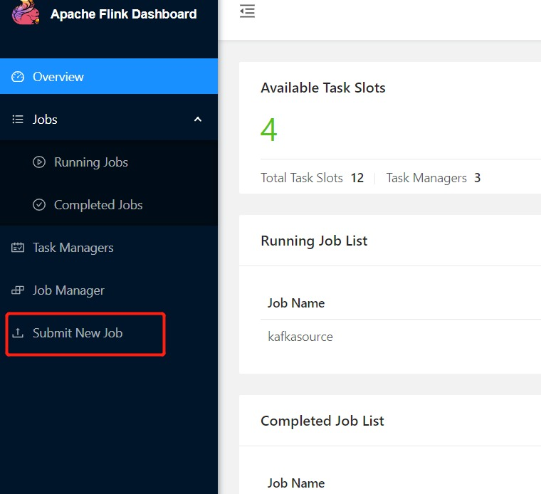
2. 点击 Add new
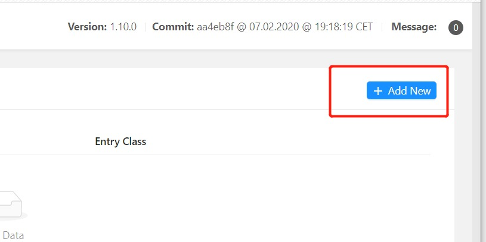
3. 上传打包好的 jar 包，点击 submit 提交执行
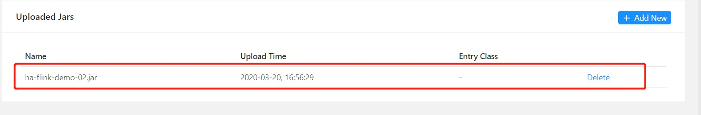
4. 查看执行结果
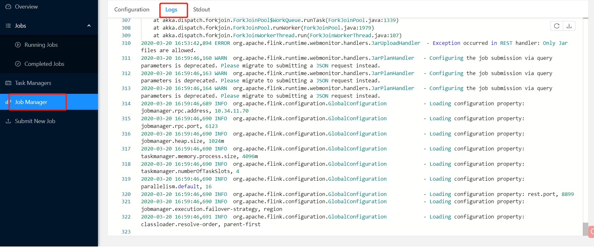
- 在命令行执行